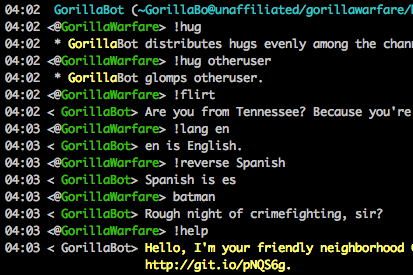
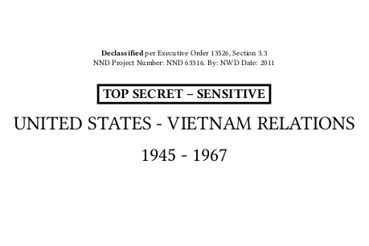

Projects

GorillaBot
GorillaBot is a Python IRC bot framework. I use it to run an IRC bot in a Wikipedia-related channel, but it can be extended to perform custom commands.

CyberPrefixer
CyberPrefixer is a Twitter bot written in Python. It scrapes headlines from Google News and prefixes "cyber" to the nouns.
